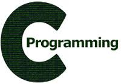
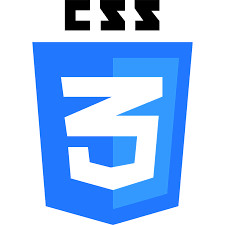

CHAILLET
Maxime
Né le
France
chaillet.job@gmail.com
2016 - 2017
Institut de Mathématiques et Informatique de Grenoble.
Obtention du Master d'informatique CCI
2002 - 2005
Ecole Supérieure de Biotechnologie de Strasbourg
Obtention du diplôme d'ingénieur en biotechnologie avec mention.
Obtention du master biologie moléculaire et cellulaire avec mention
2000 - 2002
Université de Besançon
Science de la vie, option biologie cellulaire
Obtention du DEUG avec mention.
1997 - 2000
Lycée du Grand Chenois, Montbéliard
filière scientifique, option science de la vie, spécialité mathématiques
Obtention du BAC S avec mention.
 
Systèmes d’exploitation
Windows, DOS, Mac OS X, Unix, Linux (utilisateur avancé sur distribution Gentoo)
Développement Web
Applications web en HTML, serveur apache.
Programmation
Ruby, Javascript, Pascal (Delphi), MySQL (gestion base de donnée), Visual basic (Excel, macro), Bash
Projet personnel
Développement d’un cahier de laboratoire électronique sur clé USB. Utilisation quotidienne pour la recherche. démo
Autres logiciels
Suite Microsoft office, Gimp, inkscape,…
Ingénieur de recherche à EMBL Grenoble, équipe dirigée par Imre Berger
« Etude structurale et caractérisation d’assemblages macromoléculaires eucaryotes. » Cibles: sous-complexes de facteurs de transcription et activateurs, ADN pol du virus Influenza ; VLPs ; kinase
Ingénieur à l’Institut de Biochimie et Biophysique Moléculaire et Cellulaire CNRS Paris XI. Unité de génomique structurale de la levure, dirigée par Herman Van Tilbeurgh
« Gestion de la plateforme de purification. Purification de protéines et complexes. »
Stage de fin d'étude à Novartis, Bâle, Suisse.Unité de biologie structurale, protease platform.
« Effect of lysine to arginine surface mutations on the crystallisation of viral virus protease. »
Stage à l'Ecole Supérieure de Biotechnologie de Strasbourg. Groupe de RMN et modélisation moléculaire
« Specific amino acid labelling strategy with Gyrase for NMR analysis. »
Football, natation, vélo, randonnée, musique
Langues
Références